【中篇】叮叮叮的鐵道日常（都電荒川線 ➔ 早稻田 ➔ 炭燒豚丼 豚野郎）
【中篇】叮叮叮的鐵道日常（都電荒川線 ➔ 早稻田 ➔ 炭燒豚丼 豚野郎）
👈 回顧早晨的淺草與海鮮丼？請見：【上篇】晨光下町與超載鮮魚：晴空塔出發、淺草寺九頭龍閃，以及齊藤割烹海鮮丼 ➔
👉 準備轉進入夜的都會夜景？請見：【下篇】走入都會與夜色水岸：表參道早休雜貨、神宮棒球場夜跑與藏前《戀仲》水岸 ➔
[tokyo 散策 02] 叮叮叮的鐵道日常：搭上東京都電荒川線，早稻田黑土野球部，與御茶之水炭燒「豚野郎」
本文為2015貼文（2026整理）
【東京漫步系列・三部曲 之二】
吃完入谷站超載的齊藤海鮮丼，接續晃進三之輪橋站，搭上全東京最後一條路面電車荒川線。
看著司機在民宅巷弄間互打招呼，晃到終點早稻田；撞見放學後在黑土操場奔跑的中學野球部，接著直衝御茶之水站旁狹窄樓梯上的炭燒名店「豚野郎」！
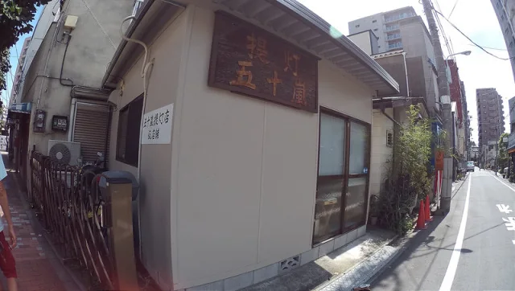
ALT50嵐：賣飲料只是我的海外事業體
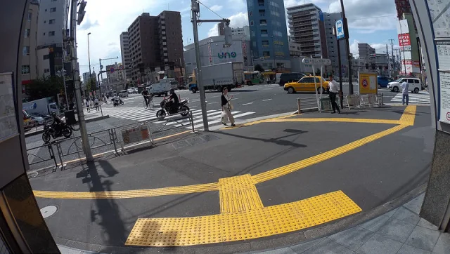
ALT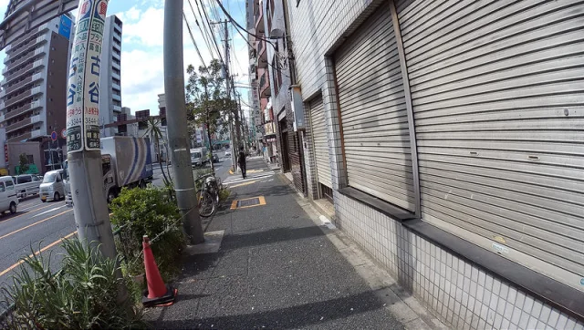
ALT前往搭乘荒川電車（あらかわせん）！
小小幼兒園也可以照一下
好日常
抵達三之輪橋站（唸作三之輪，三ノ輪駅）！ 看著看著還是挺別緻的！
這個是不是在台灣也有賣？
車內景觀
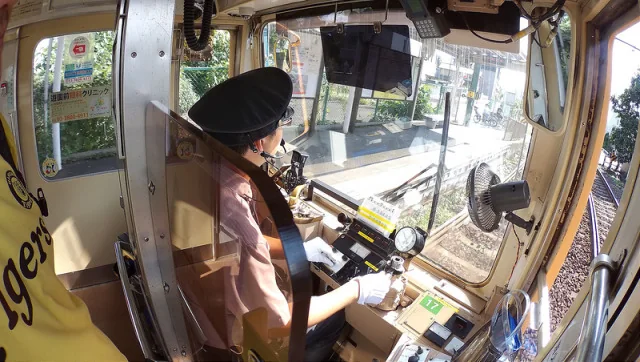
ALT很像是一台保存良好的老玩具！
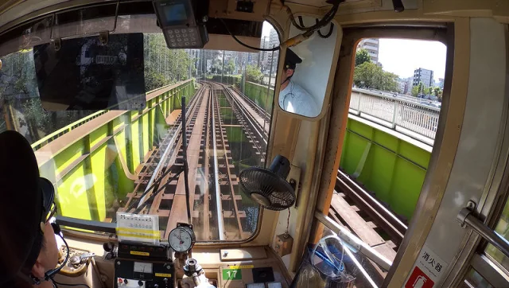
ALT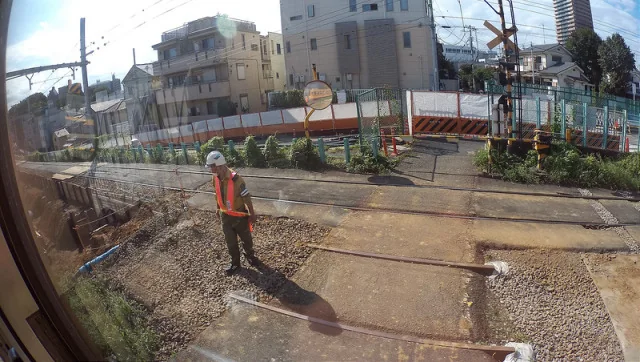
ALT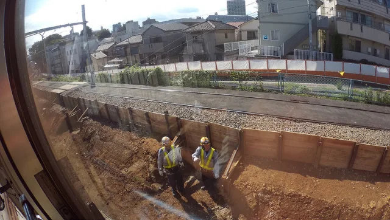
ALT印象深刻的是 列車每每經過的路線上若遇到工作人員、對向來的列車司機
雙方都會互打招呼！非常有旅遊景致！！
📌 鐵道漫步｜東京都電荒川線（Tokyo Sakura Tram）： 東京都內碩果僅存的公營路面電車系統（全長 12.2 公里，三之輪橋至早稻田共 30 站）。始於 1913 年，穿梭在沿線居民後院平交道與玫瑰花壇之間。司機員相遇時俐落的揮手致意，是東京最有人情味的流動景致。
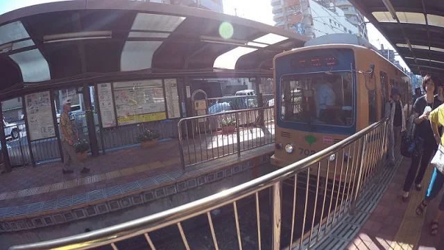
ALT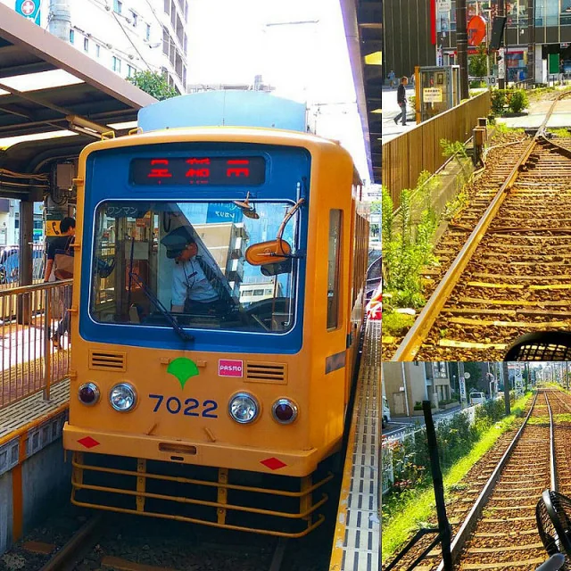
ALT隨著晃蕩著的街景 來到了終點站早稻田
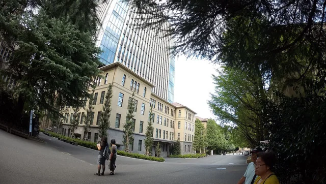
ALT迅速走了一點的早稻田校區
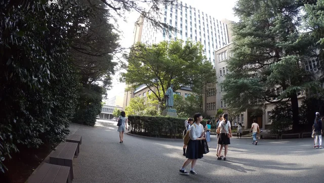
ALT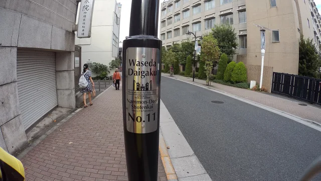
ALT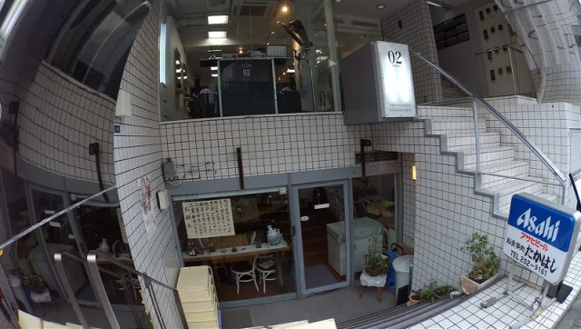
ALT這樣的店面也挺不錯的
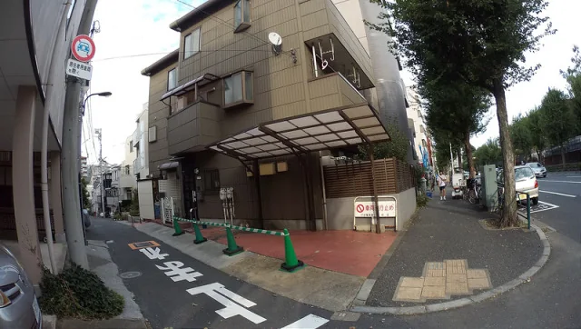
ALT無敵迷你停車位
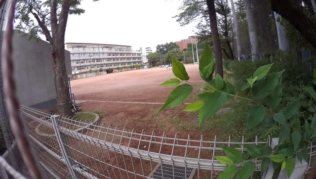
ALT國中的野球部啊！ 放學後的跑步（操場真的都是土而已啊）
📌 棒球魂魄｜日本校園野球部（部活）： 中學與高校運動部的純粹日常。沒有多餘的 PU 跑道，全是一片壓得緊實平整的黑土（黒土操場）。放學後的體能繞圈、釘鞋踩在砂土上的唰唰聲與隊員間的呼號，正是日本棒球扎根最深的土壤起點。
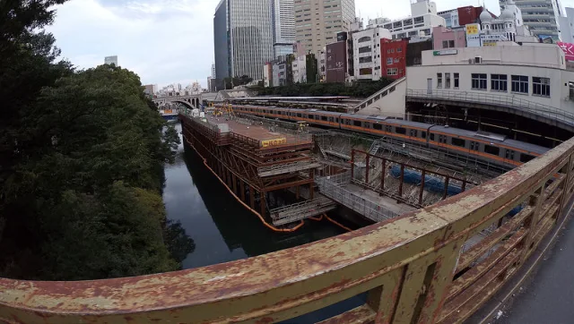
ALT#B級美食 第二站！ 豚野郎！
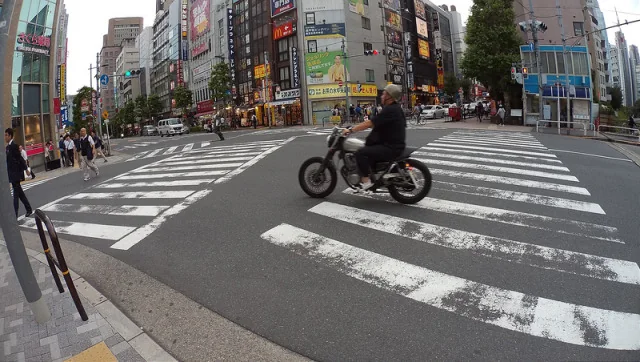
ALT每個車站附近都有它小而精緻的感覺
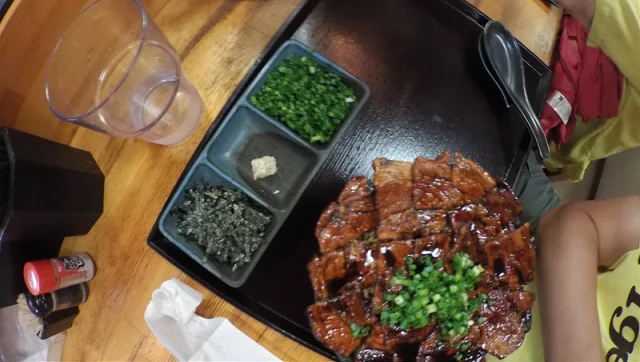
ALT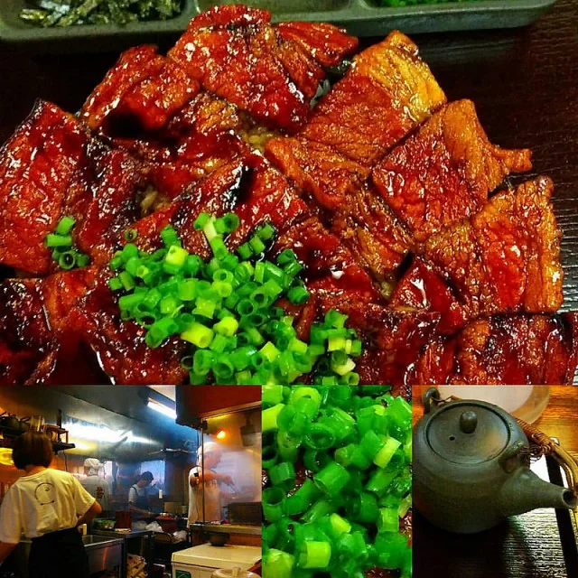
ALT飯真的是很好吃！ 但是下次不要叫大份的！ 吃不完～～！！
📌 B級美食傳奇｜御茶之水「炭焼豚丼 豚野郎」（Buta Yarou）： 隱身在 JR 御茶之水站聖橋口旁狹小 3 樓的極限排隊名店。以備長炭高溫現烤厚切豬五花，刷上香濃鹹甜醬汁，烤到肉邊緣焦香酥脆，如花瓣般層層疊蓋整碗白飯。炭火煙燻香氣極具侵略性，份量驚人，大份（大豚丼）更是對食量極限的終極挑戰！
午後轉換心情，切換到節奏鮮明的現代東京！
離開了帶著昭和慢調的荒川線，並在御茶之水被大盛豚丼狠狠填飽肚子後，午後轉進澀谷與表參道。
晚上等著我們的，是八點準時打烊的平價生活雜貨、偶遇的明治神宮棒球場夜跑魂，以及藏前隅田川畔那片宛如《戀仲》走出來的微涼夜景。
👉 接續閱讀：【下篇】走入都會與夜色水岸：表參道早休雜貨、神宮棒球場夜跑與藏前《戀仲》水岸 ➔